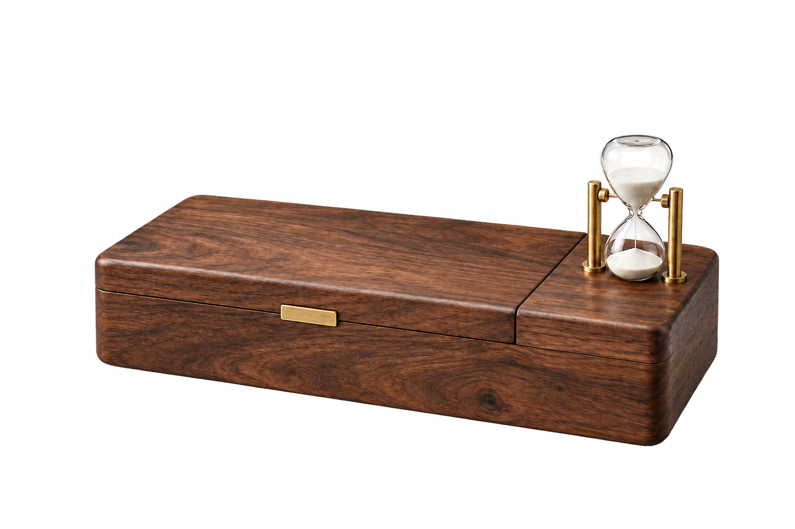
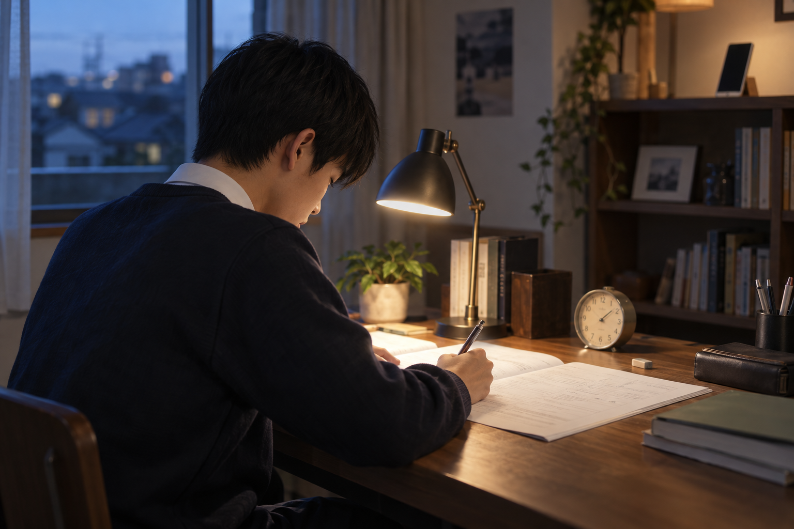
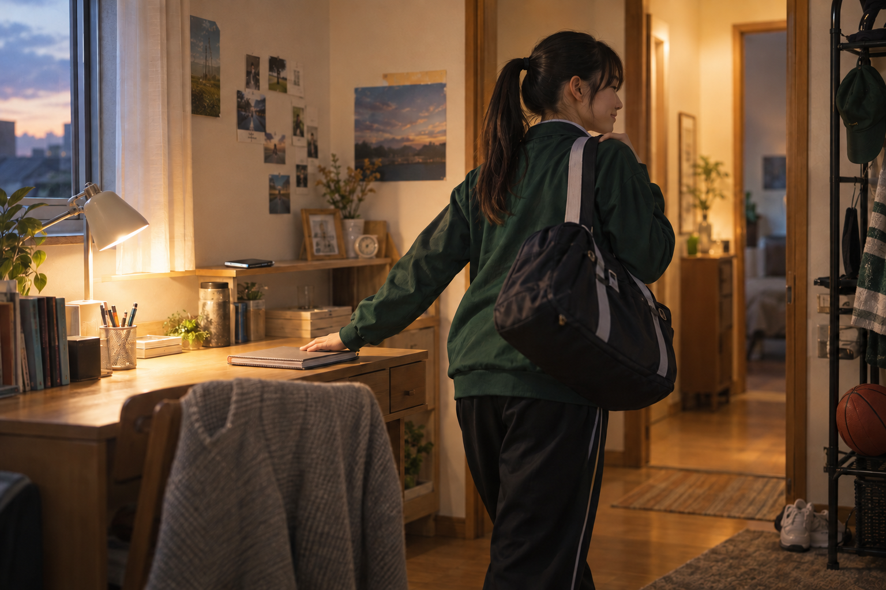
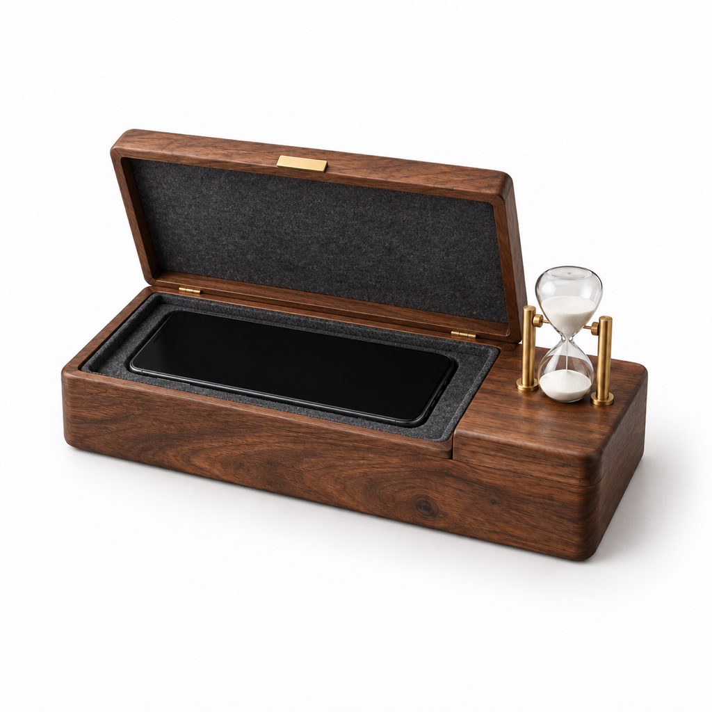
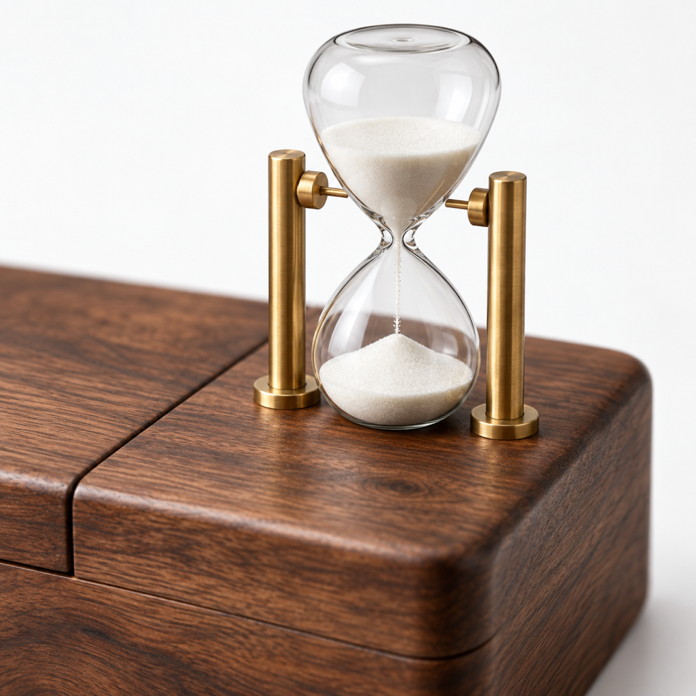
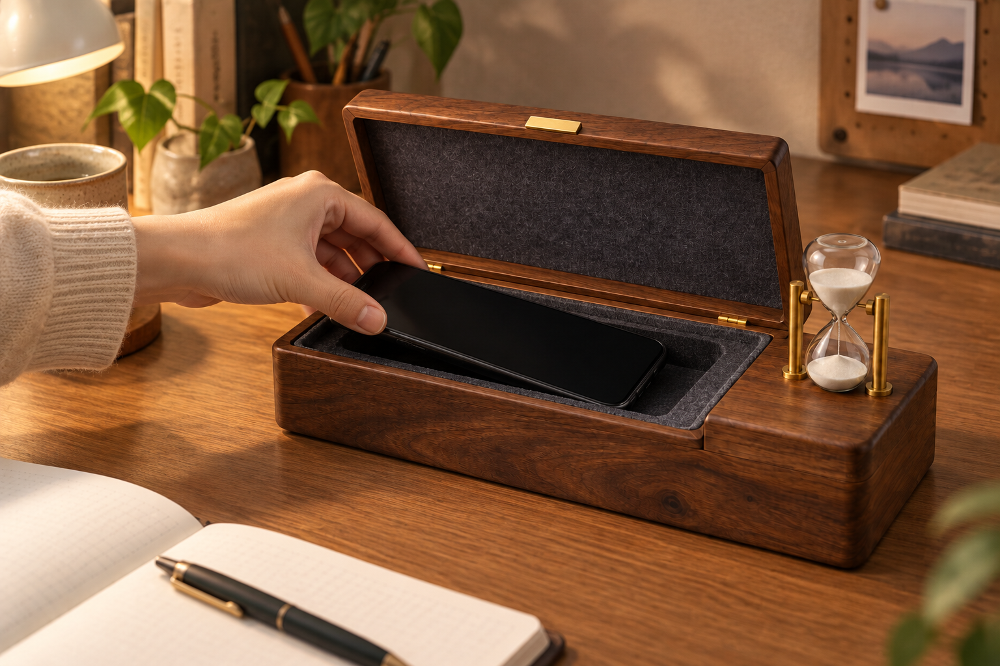
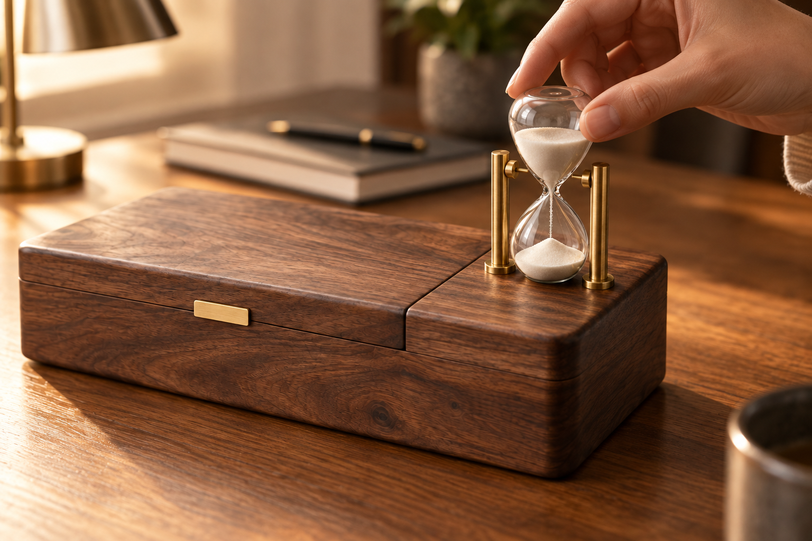

あるある 01
寝る前の「少しだけ」が、
寝る前の「少しだけ」が、
明日の朝を重くする。
通知をひとつ見るつもりが、気づけば眠る時間がずれていく。
受験生の母へ
木の箱にスマホを1台。右端の砂時計を返すと、砂が落ちきるまでフタが開かない。 親子の言い合いを増やさず、勉強のはじまりを机の上につくります。
購入ボタンは飾りです。本物の決済・申込には進みません。

言えば言うほど、親子の空気は重くなる。必要なのは没収ではなく、勉強を始める間だけ、そっと距離をつくることでした。
通知をひとつ見るつもりが、気づけば眠る時間がずれていく。
問題集を開いても、手の届く場所にあるだけで気持ちが揺れる。

ずっと我慢するのではなく、始める時間だけを守る。

本人も母も悪者にしない。ルールを砂時計に預けます。
操作は説明しすぎないほど単純に。親が管理するのではなく、時間を砂時計に預けます。
勉強前にスマホを1台、木箱の中へ。写真の通り、内側にはスマホを置くスペースがあります。
右端の砂時計をひっくり返すと、砂が落ちきるまでフタが開かない設定です。
通知を追う前に、まず1コマ。終わったら休憩や連絡の時間を親子で決められます。


「スマホやめなさい」を何度も言うほど、家の空気は重くなる。だから、箱の役割は管理ではなく、始める儀式です。
SADO-KEI BOX 60
数字のカウントではなく、白い砂が落ちる様子で時間を感じられます。通知音もありません。
木目の箱にしまうだけ。罰の道具ではなく、机に置ける文具のように見せています。
「あと5分だけ」のやりとりを減らし、親が見張る時間を少なくします。
英単語、過去問、復習。最初の1コマを守るための60分です。
STUDY RITUAL
受験期のスマホ対策は、正しさだけでは続きません。本人の気持ちを折らず、 親の声量も上げず、始めるタイミングを物に預ける。砂どけい箱 60は、そのための小さな儀式です。
参考画像のような「ケース別」の見せ方を、砂どけい箱用に置き換えました。鍵を足さず、砂時計そのものをルールにします。

隠すのではなく、勉強机に置いたまま距離を作る。だから「どこに置いたっけ」が起きにくい。

親が言い続ける代わりに、白い砂が残り時間を示します。約束が目に見えるだけで、揉めごとは少し減らせる。
KEEP GOING
毎日ずっと閉じ込める道具にしない。使う時間、連絡する時間、休む時間を先に決めるから、親子の約束として続けやすい。
※記入例は架空
画像とルールから外れることは書きません。ここでの設定は、LP選手権のためのものです。
受験勉強の最初の1コマに合わせた設定です。長時間の強制ではなく、始めるところだけを守る考え方です。
できません。ウラチカLP選手権用の架空商品ページなので、ボタンは飾りです。
ありません。スマホ1台が入る木の箱、砂時計を返すと砂が落ちきるまでフタが開かない、という範囲で表現しています。